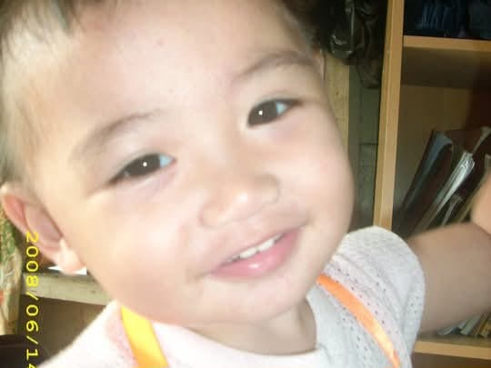
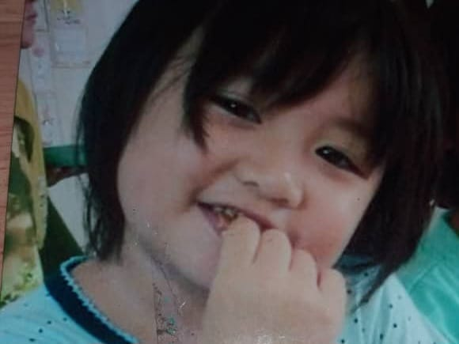
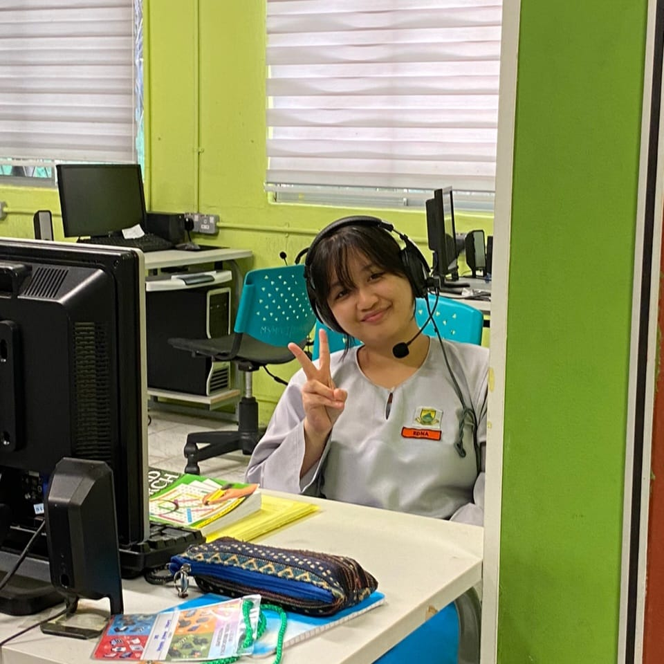
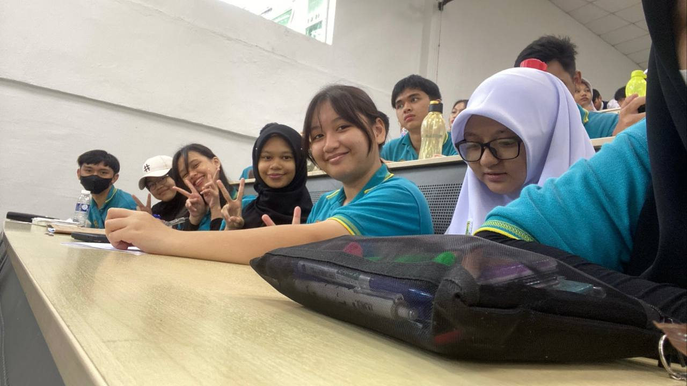
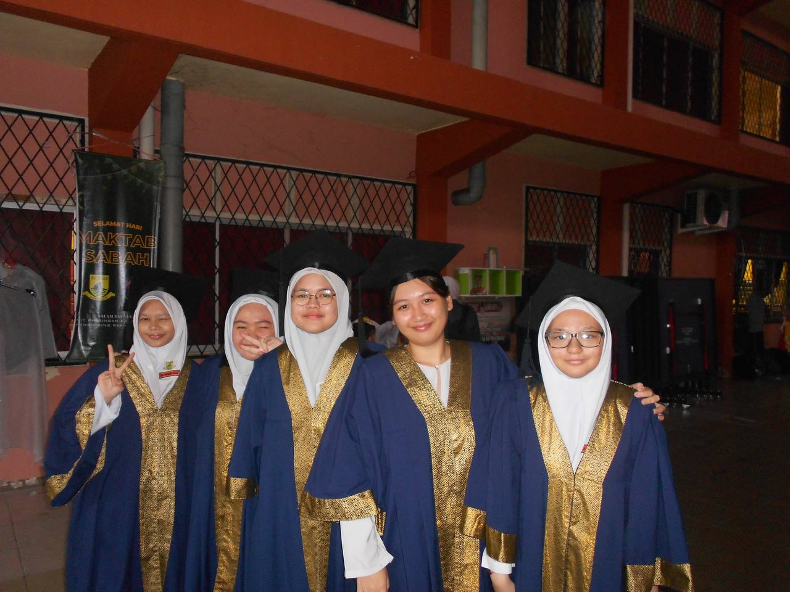
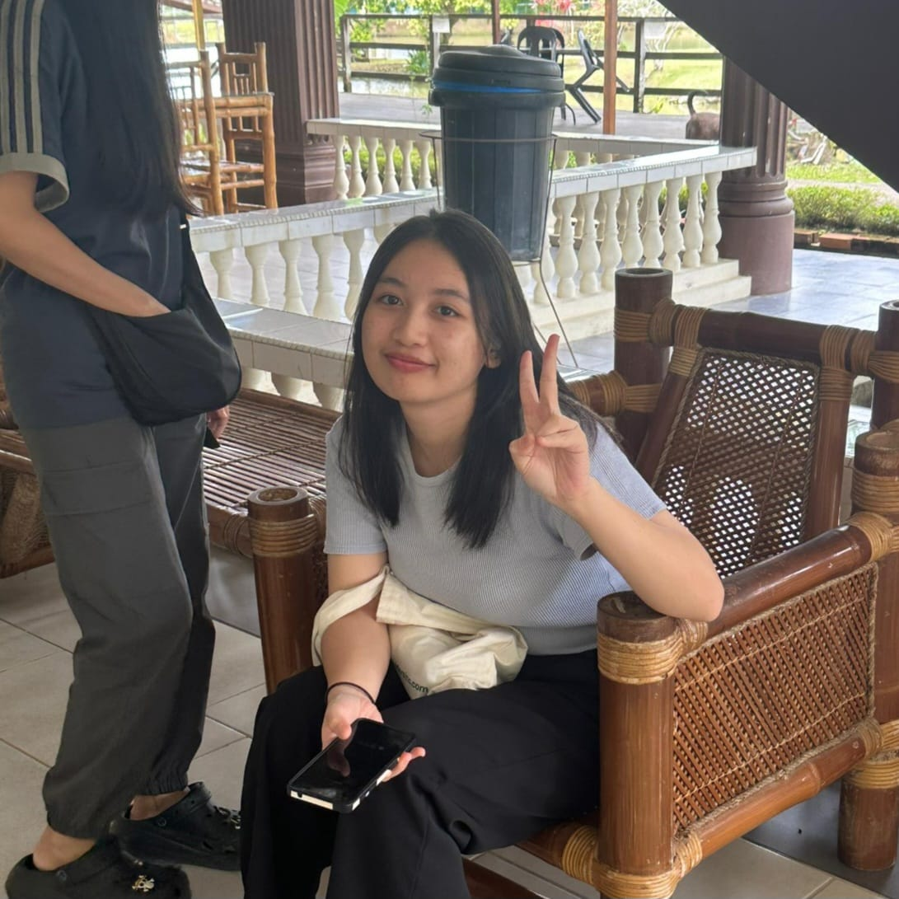
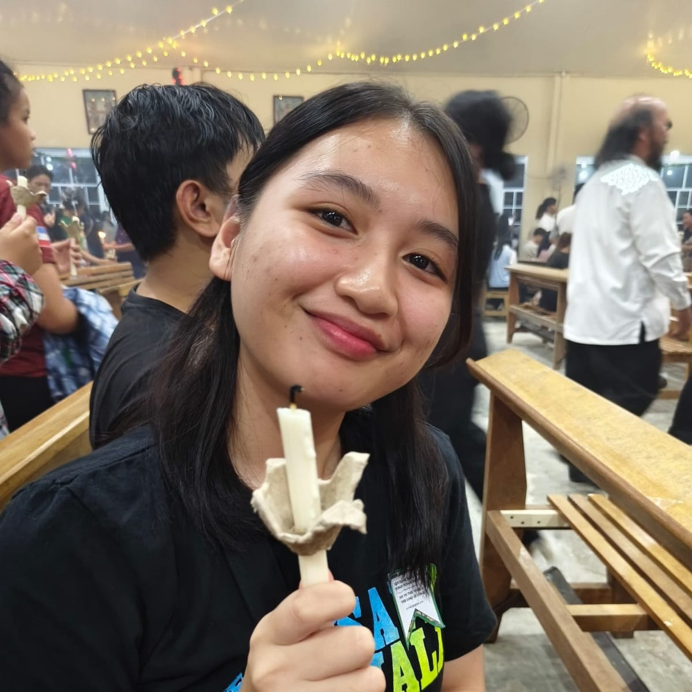
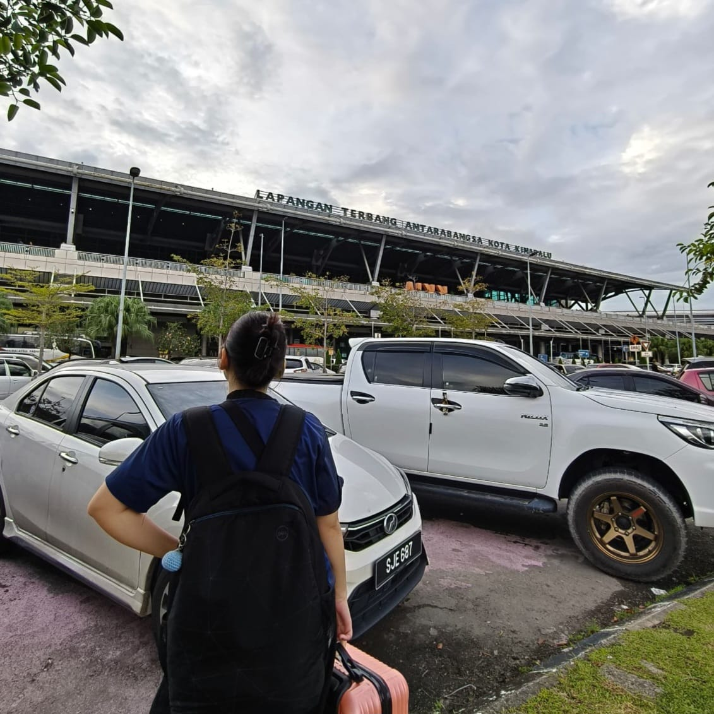

My Photo Gallery ♡
Welcome to my little photo gallery! This page is a collection of pictures from different stages of my life, from my childhood memories to my high school days and the person I am today. Every picture tells a story and reminds me of how much I have grown. These memories will always have a special place in my heart. 𐙚
01. My Childhood Memories 𐙚
Childhood was a beautiful part of my life filled with innocence, happiness, and unforgettable moments. Looking at these pictures reminds me of my younger self and the precious memories that I will always treasure.

Little Me ♡
A little glimpse of my younger self and the beautiful memories of childhood.

Sweet Childhood ✧
A precious memory from the early years of my life that I will always cherish.
02. My High School Memories ♡
My high school years were filled with learning, friendship, laughter, and new experiences. These pictures remind me of the people I met, the moments we shared, and the memories that made this chapter of my life meaningful.

School Days 𐙚
A memorable moment from my high school journey.

Memories with Friends ♡
The people and moments that made my school days more special.

A Chapter to Remember ✧
A beautiful memory from a chapter of my life that helped me grow.
03. My Pictures Now ♡
These pictures show a little part of who I am today. As I grow older, I continue to discover new things about myself, create new memories, and look forward to the experiences waiting for me in the future.

Present Me ♡
A picture of who I am today and the person I continue to become.

Little Moments 𐙚
Enjoying the present and appreciating the little things in life.

My Journey Continues ✧
Growing, learning, and creating more beautiful memories along the way.